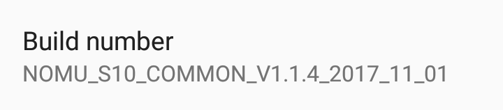
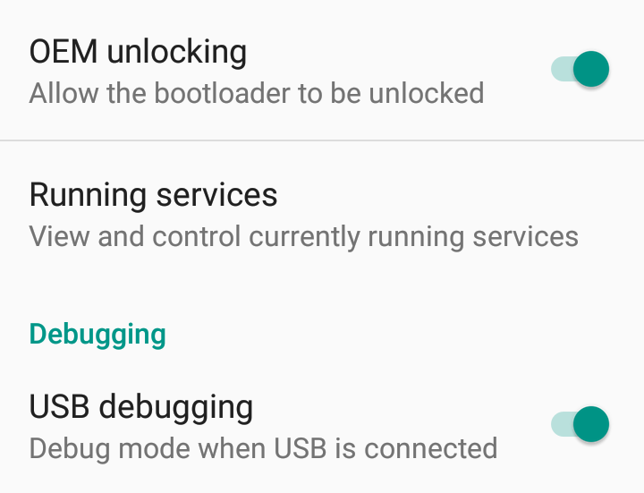
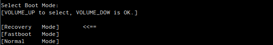

Why would anyone want an android without Google?
About 1.5 years ago I attended to a wedding. It took place outside of the city, at a restaurant with a very nice garden, where I've never before. In about 2 hours into the happening, my phone buzzed. I took it out, expecting a text message, or similar, but no: it was Google Maps, asking me if I'm at the place where I am, and since I'm there, could I upload some pictures of the place?
Since then this had become regular, until the point it became obstructive and annoying. I'm not alone: Brad Frost's1 entry talks about the same problem. I've tried everything to turn Google location tracking off. I went to Location History2 and disabled it. I went through the Google Maps application and removed every notification. This latter one cleared the madness for a while - until a new version of Maps came up, which introduced some extra notification setting, which then showed yet another popup out of the blue.
Google fails to respect user settings lately, turning into a desperately annoying data hoarding monster. They've been doing nasty things, like silently collecting cell tower information, even with location settings disabled for years3, but with the coming of GDPR4 they need to get consent - hence the silly amount of notifications they are bombarding you with.
Once I set a setting in a service, I expect it to stay they way I set it. I expect backwards compatibility, backfilled data, if needed. Google and Facebook are both failing at this; Facebook always had, Google only recently started. New app, we renamed all the settings, let's reset them to the default level of annoyance!
The whole problem on android can be traced back to one omnipotent application: Google Services Framework. This silent, invisible beast upgrades itself and Play Store whenever, wherever it wants it to. It does this all in the background, not even letting you know. If you happen to run an ancient phone, like my HTC Desire5, it will fill up that generous 150MB you have for user apps without a blink of an eye, and let you wonder why your phone can't boot any more.
The extremely sad part is that everyone started depending on GMS - Google Mobile Services - for convenience: it provides push services, you don't have to run you own. It all leads to the point that android, while in theory is Open Source, it will never be Free from Google, in it's current form.
Enter microG6: a few enthusiasts with the same feelings as me, but with actual results. microG is a service level replacement for Google; it's Free and Open Source, it's transparent. There's only one problem: it's very tricky to install it on nieche phones, with odexed ROMs.
So I made a guide. While this guide was made using a Nomu S107, but given it's an AOSP based ROM with tiny modifications, I'm fairly certain it can be applied to any similar, no-name less known brands and phones.
Important notes
The methods below might void your warranty. It might brick your phone. It will take while. It can cause an unexpected amount of hair pulled out.
Never do it on your only phone, or a phone you value high. I take no responsibility if anything goes wrong.
It was done on a Nomu S10, with Android 6.0 Marshmallow. It will most probably need to be altered for other versions.
The heavy lifting, the work, are all done by magnificent people out there; this article is merely summary of existing knowledge.
The only thing I can assure is that it worked for me, but it took a weekend to get to the bottom of it.
Prerequisites
Operating system, adb, fastboot
The guide was made for Debian based linux, including Ubuntu and Mint.
I assume you have a general understanding and familiarity with fastboot and adb - these are both needed during the process.
It's doable on Windows as well, with very similar steps, but I don't have a Windows, so I can't make that guide.
SP Flash Tool (flashing stock ROMs on MediaTek devices)
The stock ZIPs Nomu provide can't be flashed via the regular recoveries, like TWRP. As a workaround, I used to extract it and flash the pieces by fastboot - that is because I wasn't aware of a tool, called SP Flash Tool and the MediaTek download mode.
When the phone is turned off and connected to a computer via USB, it shows up as modem (!) device, as ttyACM. The SP Flash tool uses this to flash the ROM, but in order to do that - even if the flash tool is run by root - needs some tweaking on the linux side.
In order to get this supported on Debian, some udev rules need to be added:
Run (as root):
cat > etc/udev/rules.d/20-mediatek-blacklist.rules << EOF
ATTRS{idVendor}=="0e8d", ENV{ID_MM_DEVICE_IGNORE}="1"
ATTRS{idVendor}=="6000", ENV{ID_MM_DEVICE_IGNORE}="1"
EOF
cat > etc/udev/rules.d/80-mediatek-usb.rules << EOF
SUBSYSTEM=="usb", ACTION=="add", ATTR{idVendor}=="0e8d", ATTR{idProduct}=="*"
EOF
systemctl restart udev.serviceOnce done add your user to the dialout and uucp groups as:
usermod -a -G dialout,uucp YOUR_USERNAMESp Flash tool needs an old version of libpng12, so get that from the Debian packages, or from the jessie (oldstable) repository:
wget http://ftp.uk.debian.org/debian/pool/main/libp/libpng/libpng12-0_1.2.50-2+deb8u3_amd64.deb
dpkg -i libpng12-0_1.2.50-2+deb8u3_amd64.deb
rm libpng12-0_1.2.50-2+deb8u3_amd64.debThis should make it possible to flash, using the SP flash tool, which can be downloaded from spflashtool.com8.
Credit due to Miss Montage on needrom.com9 for finding these out.
TWRP recovery for Nomu S10
Do not flash TWRP recovery on the Nomu S10. There is some kind of safety check, which wants to trigger a factory reset, so what happens in short is the following:
- you flash system, boot, cache from stock
- you flash TWRP as recovery
- the phone boots
- it re-locks the OEM unlock switch
- it removes TWRP
At this point it's stuck with a boot logo on screen (not even a bootloop); it can't even be turned off, it's without a working system, no recovery, and a locked fastboot. If you reach this point, use SP Flash Tool described above.
Instead of flashing, a method called dirty boot will be used: via fastboot, the TWRP image will be booted from the PC, not from the phone, because TWRP is still neede in order to flash custom ZIPs. Jemmini10 made one for the Nomu S10; it in a zip11 ; extract it to get a .img file.
SuperSu flashable ZIP
Many things have changed since the early days of rooting android (2.3 and 4.x). Nowadays fiddling with the system /bin might result in mayhem, so clever people came up with the idea to put su, the actual binary needed for rooting into the boot image, ending up in /sbin, without triggering any "security". One of these systemless rooting apps is SuperSu12, which you'll need in a flashable zip13 format.
Xposed framework ZIP and apk
A vast amount of Android's real potential is lock behind bars - the reason is "security". I'm putting this in quotes, because it's smoke and mirrors: malware can use vulnerabilities to install itself deep inside the system that it's impossible to even detect it, yet you're not allowed to have full access on your phone. Not even the security suits and the malware scanners ask for root, and without that, they are not much more than a paid, bad joke.
Anyway: the XPosed Framework14 is here to help. It's a utility which lets you install modules which modules tweak low level android behaviour. For example, Volumesteps+ will let you change the granularity of volume steps, which is very useful for someone who'd find a volume level between the factory 8 and 9 the best. For us, the important module will be FakeGApps, which allows signature spoofing15, which is a hard requirement for microG to work.
For reasons I'm yet to understand, I had to both flash the zip16 and install the apk17 version to get XPosed on the phone. In theory, only one should have been enough, but for now, get both.
NanoDroid microG ZIP
NanoDroid18 is originally a Magisk module (it's another systemless rooting and framework, but I could never get it running on the Nomu), but it's also available as flashable ZIPs.
For our needs, only the NanoDroid microG zip19 is required.
The actual un-googling
Summary
- root the phone and install xposed
- enable signature spoofing via xposed module fakegapps
- removed all google related apps, libs, entries
- install microg
Now: in details.
1. Rooting the Nomu S10 with SuperSu and Xposed
Important: OEM unlocking will trigger a factory reset, it will wipe every user and app setting from the phone.
- Start android
- Enable
Developer Options:- go into
Settings About Phone- tap on the
Build Numberuntil you get the message 'you are now a developer!' Build number in About Phone
- go into
- Enable OEM unlocking
- go into
Settings Developer- allow
oem unlocking
- go into
- Enable USB Debugging (ADB)
- go into
Settings Developer- allow
usb debugging OEM unlock and USB debugging options
- go into
- reboot into fastboot:
- run
adb reboot bootloaderfrom the host, or: - power off the phone, then press and hold
Volume UpandPower Fastboot menu
- run
- in fastboot, issue the oem unlock command:
fastboot oem unlockfrom the host- press
Volume upas asked on the phonesFastboot menu
- reboot the phone:
fastboot reboot - let the factory reset flush through
- re-enable
Developer Options(see 2.) - verify that OEM unlocking is on - is should be. If not, go back to 1. and start again.
- re-enable
USB debugging(see 3.) - boot into fastboot (see 5.)
- "dirty" boot TWRP recovery:
fastboot boot [path to the twrp image - the one extracted from the zip]
- install SuperSu via TWRP
- either put the zips on a microSD card and flash it as regular zips
- or use
adb sideloadfrom theAdvancedmenu in TWRP
- install Xposed via TWRP (see 14.)
- reboot the phone
- install the Xposed apk
2. Enable signature spoofing with FakeGapps
Once the Xposed Installer is up and running it will look like this:
Under Menu, Download search for FakeGApps20, click Download and enable it:
For FakeGApps to take effect, the phone has to be rebooted, but it can be done together with the next step.
3. Remove all google apps and libraries
These commands should be run either via an adb shell, or from a Terminal Emulator on the phone.
adb shell
# become root - SuperSu will prompt for verification
su -
# remount / and /system for read-write
mount -o remount,rw /
mount -o remount,rw /system
# create a file with the list it items to delete
cat > /sdcard/ungoogle.sh << EOF
rm -rf /system/app/CarHomeGoogle*
rm -rf /system/app/ChromeBookmarksSyncAdapter*
rm -rf /system/app/ConfigUpdater*
rm -rf /system/app/FaceLock*
rm -rf /system/app/GenieWidget*
rm -rf /system/app/Gmail*
rm -rf /system/app/Gmail2
rm -rf /system/app/GmsCore*
rm -rf /system/app/Google*
rm -rf /system/app/LatinImeTutorial*
rm -rf /system/app/LatinImeDictionaryPack*
rm -rf /system/app/MarketUpdater*
rm -rf /system/app/MediaUploader*
rm -rf /system/app/NetworkLocation*
rm -rf /system/app/OneTimeInitializer*
rm -rf /system/app/Phonesky*
rm -rf /system/app/PlayStore*
rm -rf /system/app/SetupWizard*
rm -rf /system/app/Talk*
rm -rf /system/app/Talkback*
rm -rf /system/app/Vending*
rm -rf /system/app/VoiceSearch*
rm -rf /system/app/VoiceSearchStub*
rm -rf /system/etc/permissions/com.google.android.maps.xml
rm -rf /system/etc/permissions/com.google.android.media.effects.xml
rm -rf /system/etc/permissions/com.google.widevine.software.drm.xml
rm -rf /system/etc/permissions/features.xml
rm -rf /system/etc/preferred-apps/google.xml
rm -rf /system/etc/g.prop
rm -rf /system/addon.d/70-gapps.sh
rm -rf /system/framework/com.google.android.maps.jar
rm -rf /system/framework/com.google.android.media.effects.jar
rm -rf /system/framework/com.google.widevine.software.drm.jar
rm -rf /system/lib/libfilterpack_facedetect.so
rm -rf /system/lib/libfrsdk.so
rm -rf /system/lib/libgcomm_jni.so
rm -rf /system/lib/libgoogle_recognizer_jni.so
rm -rf /system/lib/libgoogle_recognizer_jni_l.so
rm -rf /system/lib/libfacelock_jni.so
rm -rf /system/lib/libfacelock_jni.so
rm -rf /system/lib/libgtalk_jni.so
rm -rf /system/lib/libgtalk_stabilize.so
rm -rf /system/lib/libjni_latinimegoogle.so
rm -rf /system/lib/libflint_engine_jni_api.so
rm -rf /system/lib/libpatts_engine_jni_api.so
rm -rf /system/lib/libspeexwrapper.so
rm -rf /system/lib/libvideochat_stabilize.so
rm -rf /system/lib/libvoicesearch.so
rm -rf /system/lib/libvorbisencoder.so
rm -rf /system/lib/libpicowrapper.so
rm -rf /system/priv-app/CarHomeGoogle*
rm -rf /system/priv-app/ChromeBookmarksSyncAdapter*
rm -rf /system/priv-app/ConfigUpdater*
rm -rf /system/priv-app/FaceLock*
rm -rf /system/priv-app/GenieWidget*
rm -rf /system/priv-app/Gmail*
rm -rf /system/priv-app/GmsCore*
rm -rf /system/priv-app/Google*
rm -rf /system/priv-app/LatinImeTutorial*
rm -rf /system/priv-app/LatinImeDictionaryPack*
rm -rf /system/priv-app/MarketUpdater*
rm -rf /system/priv-app/MediaUploader*
rm -rf /system/priv-app/NetworkLocation*
rm -rf /system/priv-app/OneTimeInitializer*
rm -rf /system/priv-app/Phonesky*
rm -rf /system/priv-app/PlayStore*
rm -rf /system/priv-app/SetupWizard*
rm -rf /system/priv-app/Talk*
rm -rf /system/priv-app/Talkback*
rm -rf /system/priv-app/Vending*
rm -rf /system/priv-app/VoiceSearch*
rm -rf /system/priv-app/VoiceSearchStub*
EOF
# execut the created list
sh /sdcard/ungoogle.sh3. Install NanoDroid microG
Once Google is cleaned up and the FakeGapps module is ready, reboot into recovery (see 12. and 13.) and install the NanoDroid zip via TWRP.
If you done everything right, there will be no Google Services or apps left, if not - as I did - a few leftovers will need to be manually cleaned up.
If the microG flashing was successful, an app, called microG settings will show up:
Done!
http://bradfrost.com/blog/post/google-you-creepy-sonofabitch/↩
https://qz.com/1131515/google-collects-android-users-locations-even-when-location-services-are-disabled/↩
https://spflashtool.com/download/SP_Flash_Tool_v5.1744_Linux.zip↩
https://www.needrom.com/download/how-to-setup-sp-flash-tool-linux-mtk↩
https://forum.xda-developers.com/attachment.php?attachmentid=3947063↩
https://s3-us-west-2.amazonaws.com/supersu/download/zip/SuperSU-v2.82-201705271822.zip↩
https://github.com/microg/android_packages_apps_GmsCore/wiki/Signature-Spoofing↩
https://dl-xda.xposed.info/framework/sdk23/arm/xposed-v89-sdk23-arm.zip↩
https://forum.xda-developers.com/attachment.php?attachmentid=4393082↩
https://downloads.nanolx.org/NanoDroid/Stable/NanoDroid-microG-16.1.20180209.zip↩
http://repo.xposed.info/module/com.thermatk.android.xf.fakegapps↩
Webmentions and Pingbacks
https://commentpara.de/comment/177.htm